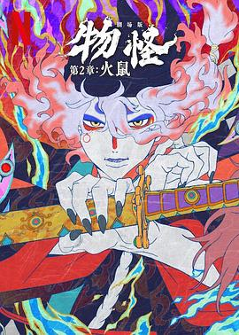

7.9
怪化猫：火鼠
Mononoke Movie 2: Hinezumi
2025
日本
评分 7.9
导演:
铃木清崇 / 中村健治
演员:
长岛雄一 / 日笠阳子 / 堀内贤雄 / 细见大辅 / 梶裕贵 / 神谷浩史 / 黑泽朋世
类型:
恐怖,悬疑
剧情简介
在一场动荡平息之后，“药卖”再度登场，这一次的舞台是位于江户城中的大奥——高墙深院、帷帐重重，一切看似秩序井然，却在阴影中燃起欲望的火焰。新任总管大友牡丹（户松遥 配音）以铁腕推行改革，引发与备受宠幸的花魁富贵（日笠阳子 配音）之间的矛盾日益升温。与此同时，雪子皇后所出的皇子被视为“不吉”，一纸命令让富贵陷入危险的算计漩涡。当深夜的锦缎裂开，接连有人自燃化灰。药卖穿梭于锦宫帏帐与阴暗密道，耳闻窃语、舞台灯光下的暗影，他捕捉到那股“火鼠”妖气——化为灰烬的身躯、灼烧的地板、鼠群攀附的冷墙。他开始追问：形态、真相、理为何？敌人伪装在绣花细节里，罪恶隐藏在高雅礼仪中。影片以深沉色调与传统绘画纹理为载体，镜头时而俯视红绸织成的大奥天井，时而贴近燃烧后的炭灰，营造出“华丽与恐惧共舞”的氛围。你能感受到绸缎下的呼吸，也能听到鼠耳边的低语。导演让观众像药卖一般，从表面的宫廷繁华，一步步沉入权力下的诡秘与烈焰。